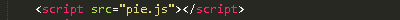
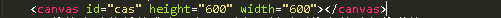
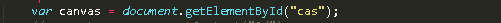
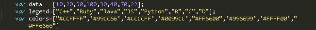
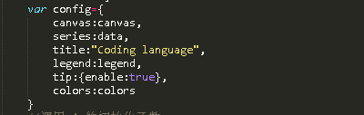
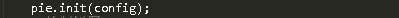
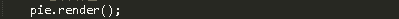

Canvas 饼图
在Canvas上将数据画成饼图
将这个功能封装成为一个pie对象，只需要将参数对象传递给pie.init(config)函数，就能初始化canvas，然后调用pie.render()函数，饼图就画好啦。 下载pie.js
0. 引入pie.js文件
最开始需要在你的代码前面引入pie.js文件，你可以放在head标签里面，也可以放在body底部其他script标签的前面。
1. 获取canvas元素
html代码中给你的canvas元素起个ID
首先我们获取要绘制饼图的canvas元素

var canvas = document.getElementById("cas");
2. 设置参数
然后准备好数据、图例和颜色（内置了9个颜色，数据数量小于9的话，不传颜色参数也可以啦~）

var data = [10,20,50,100,30,40,70,22];
var legend=["C++","Ruby","Java","JS","Python","R","C","D"];
var colors=["#CCFFFF",'#99CC66','#CCCCFF','#0099CC',"#FF6600",'#996699','#FFFF00',"#FF6666"]
然后把这些打包在一个对象里

var config={
canvas:canvas,
series:data,
title:"Coding language",
legend:legend,
tip:{enable:true},
colors:colors
}
tip:{enable:true}提供了鼠标在饼图上移动的时候显示提示框的功能，（不想用的话可以不传这个参数哦~）
title:"Coding language"这个参数传入这个图表的标题，格式是字符串。
3. 画图
紧张，激动人心的时候到啦，我们来使用pie的初始化函数

pie.init(config);
最后一步，使用pie.render()画图啦

pie.render();
好啦，大功告成啦~，一个饼图就画好了。